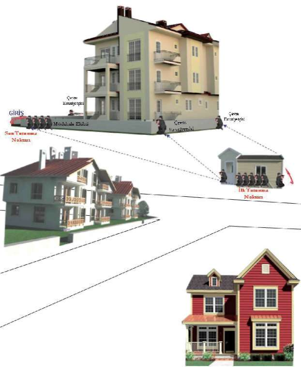

2.8. Brifing Verilmesi
Operasyona yönelik tüm hazırlıklar tamamlanarak ilgili personel ve birimlere brifing verilir.
Ayrıca yapılan plana göre operasyonun sevk ve idaresinden sorumlu olan operasyon sorumlusu; koordinesinden sorumlu operasyon yöneticisi, belirlenen plan doğrultusunda operasyonda görev alacak personele görevleriyle ilgili bilgi verip yapılacak operasyon hakkındaki fikirlerini de alarak operasyon planına son şeklini verir.
3. OPERASYON SIRASI FAALİYETLER
3.1. Hazırlık
Operasyonun yapılmasına karar verilmesiyle başlayıp müdahale emrinin verilmesine kadar geçen süredir.
Hazırlık faaliyetleri aşağıdaki gibidir:
1. Toparlanma, hazırlık ve kontroller
2. Operasyon mahalline intikal
3. Operasyon mahallinde harekât merkezi tesisi 4. Diğer birimlerle koordine
5. Son provaların yapılması
6. Unsurların tertiplenmesi
3.2. Hedef Noktanın Çevre Emniyetinin Alınması Operasyon yapılacak hedef noktanın, fiziki ve cevre faktörleri göz önünde bulundurularak, mümkün olduğunca 360 derecelik görüş açısından, içerden dışarıya, dışardan içeriye kontrol ve denetim altında tutulmalıdır. Bu alan tesis edilirken, hedefin görüş ve atış kabiliyeti göz önüne alınmalıdır.
Çevre emniyeti alınmış olan unsurun, hedef noktanın mümkün olduğu kadar küçük bir alanda sınırlı kalmasını, operasyon esnasında gerek olayla ilgisi olsun gerekse olmasın başka şahısların zarar görmesini önlemek ve faillerin kaçmasına, yer değiştirmesine fırsat vermemek gerekir. Ayrıca hedef noktaya giriş yapacak olan unsurun emniyetinin alınması ve operasyonun bir disiplin ve kontrol altında yapılması sağlanmalıdır.
Çevre emniyetini alacak unsurun görevi sadece denetim ve kontrolle sınırlı değil, gerektiğinde hedef noktayı gözetleyerek meydana gelen önemli değişiklikleri anında operasyon amirine bildirerek aynı zamanda şartlara göre muharip olarak görev yapacak biçimde tertiplenmelidir.
3.3. Operasyon (Saldırı Şeklinde Ani Giriş-Yakalama) Operasyon emrinin verilmesi ile başlayıp hedefin tesirsiz hâle getirilmesine kadar geçen süredir. Çok iyi eğitilmiş bir giriş unsuru, çok iyi zamanlama ve 164


BÖLÜM
OPERASYON VE OPERASYON TEKNİKLERİ
planlama gerektirir. Olay akışı içerisinde eldeki veriler ve durum değerlendirilerek en uygun saldırı yöntemi tespit edilerek operasyonun planlaması yapılır ve uygulamaya geçilir. (Bakınız Şekil-17)
Operasyon altı aşamada gerçekleşir,
1. Yaklaşma
2. İlk tutunma noktasında tertiplenme.
3. Çevre emniyetinin alınması
4. Son tutunma noktasında tertiplenme.
5. Giriş (şok saldırı) ve hedefin etkisiz hâle getirilmesi.
6. Tahliye
Şekil 22. Operasyon Alanında Tertiplenme
Operasyonun başarılı şekilde sonuçlanabilmesi için hedef ve giriş unsuru açısından dikkate alınması gereken çok önemli hususlar bulunmaktadır.
Hedef açısından;
^ Hedefte şok ve şaşkınlık meydana getirilmesi,
^ Beklenmedik zamanda ve beklenmedik noktalardan giriş yapılması, 165
^ Hedefin tecrit ettikleri hedef alan içerisinde kontrol ve denetimlerinin minimum seviyede oldukları noktada ve zamanda hedefe müdahale yapılması,
^ Şartlar elverdiği ölçüde zamanın maksimum kullanılarak (açığa çıkmış
operasyonlarda) hedefin üzerinde meydana getireceği olumsuz etkilerden yararlanılması gerekir.
Giriş (saldırı) unsuru açısından;
1. İyi bir planlamanın yapılması,
2. İyi bir zamanlama,
3. Koordinasyon,
4. Emniyet tedbirlerinin eksiksiz alnması, 5. Dikkat,
6. Sessizlik,
7. Kararlılık,
8. Sürat ve hız,
9. Saldırgan tavır,
10. Oto kontrol,
11. Atış disiplini,
12. Birey bazında inisiyatif kullanma yetki ve yeterliliğinin bulunması gerekir.
3.4. Giriş (Saldırı) Yöntem ve Teknikleri
3.4.1. Giriş (Saldırı) Yöntemleri
3.4.1.1. Ani Şok Giriş (Saldırı)
Bir veya birden çok noktadan, hedefe şok etkisi ile en seri şekilde giriş
yapılarak müdahale yöntemidir. Şartlara göre bir veya birkaç nokta ya da tüm noktalardan aynı anda giriş yapılır.
3.4.1.2. Sızma
Operasyonun seyri içinde, uygun ortam ve şartlar elverirse sezdirilmeden hedefe personel sızdırılması ile yapılan müdahale yöntemidir.
3.4.1.3. Sürpriz Giriş (Saldırı)
Operasyonun seyri içinde doğan uygun ortam ve şartlar değerlendirilerek, taktik saldırı için kullanılan yöntemdir.